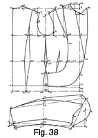

Early 1940's—Ladies' Garment Cutting and Making
by
F. R. Morris
Chapter VI—The Construction of Patterns for "Classical" Short Jackets
THERE are standard designs of tailored costumes that do not vary, year in and year out, excepting for seasonal changes in length of coat or skirt or width at the hem line. These costumes have earned the title of "classical" in the trade, due no doubt to the unending popularity of these styles over the more "effervescent" modes that live and die in one season. We have a similar parallel in music, the tunes that live for a moment and the "classical" melodies for which there are always adherents.
Women are attracted by the volatile in fashion, yet the "well-dressed" appeal of a costume is an unfailing antidote to the more "dressy" styles if they are unsuited to the wearer. Tailored garments always have a warm place in the hearts of English women, for their type is suited to the trim, refined appearance of a well-cut suit as no other women in the world.
A well-known woman explorer and globe-trotter once wrote: "Into a room full of beautiful women clothed in gorgeous gowns, nonchalantly strolled an Englishwoman clad in a tailored suit bearing the unmistakable imprint of Bond Street cut and 'line.' Amid a murmur of approval she was acclaimed as the best-dressed woman in the room." Yet it could only be a comparison of types. The Englishwoman looks her best in clothes of conservative design, where, in similar circumstances, women of any other nationality would look quite inconspicuous.
At any time of the year and especially in the Spring, a tailored suit is the essence of chic, made in a way only possible by English tailors and tailoresses. The standard designs are few in number yet of undiminishing popularity in vogue. In a world of constantly changing fashion we do know the coming style in tailored suits will be very little different from that of the past.
Panelled jackets with either single- or double-breasted fronts are perhaps most in demand; the slimming effect of this design ensures its continued success. Next, we have the sidebody jacket sometimes with a centre seam at the back or, alternatively, a back cut on the fold of the material. A link-button front often accompanies this style, cut away sharply or straight-fronted, thus emulating a man's dinner jacket. Jeatted pockets, slanting or straight, may terminate a seam from the shoulder or a waist dart under the bust. A "lounge" style cut on masculine lines is adaptable to sportswear and severely tailored designs with the accompaniment of suitable restraint in the accessories worn.
Each season sees variation in the "run" of seams and the length of the jacket—very infinitesimal variation perhaps, but the reader of the most informative of fashion periodicals keeps au fait with the changes. Panel seams may break off from their destination at the shoulder and be diverted into the back of the armhole for a square-shoulder effect, or, to gain an impression of smoothness over the shoulders and achieve a sloping-shoulder effect, the "drop-shoulder" line may be utilized. Points of design to break up the straight line of a seam or as an aid to a slim effect do not change the generally static design of costume jackets, so that in applying the system to the drafting of tailored styles we need only attend to the interpretation of designs always in vogue.
When interpreting the following designs, the system will be based upon varying measures and figures to illustrate more clearly, if necessary, the working in practice. A degree of ease in fit will be in accordance with the requirements of the majority of women; it would be futile to base systems on the exaggeratedly close fit that a minority of women desire.
The "plastered" look may suit a woman of very good figure, but, on the whole, the attainment of a shapely garment without strain should be our aim. A few months ago the public were treated to an announcement of a new material that promised no more badly fitting garments. But the point was that in order to produce a good fit, the garment had to be cut too small! Otherwise with bad cutting the same faults would be ever apparent.
If a very close-fitting garment is required by the client, a reduction of the addition to the bust size for ease and seams by ½ inch will make the necessary difference throughout the system.
Single-Breasted Link-fronted Jacket (Fig. 33)
The link-fronted jacket with panel seams at back and front is generally accepted as one of the most fashionable and neat designs worn. Peaked lapels are an attribute of style, culminating in a gracefully cut-away front below the single link button. Jeatted pockets set on the straight are shown, with a waist dart above terminating under the bust prominence.
For the purpose of refreshing the memory, the system as applied to this design will be based upon the normal 34-inch bust basis; in succeeding styles the system will be applied to larger and smaller figures based upon actual measurements to which the author has cut.
To draft the link-fronted jacket the following are the measures necessary—
- Chest above bust prominence = 32 inches.
- Bust prominence = 34 inches.
- Skirt waist = 25 inches.
- Hips = 38 inches.
- To natural waist = 15 inches.
- Full length = 22 inches.
- Half-back width = 6½ inches.
- Sleeve length = 29 inches.
- Working scale = half the bust measure = 17 inches.
Commence by drawing line X to X, the full length of the jacket, 22 inches.
- 1 from X = the depth of the scye = one-third of the scale plus 1¾ inches.
- 2 from X = the natural waist length = 15 inches.
- 3 from 2 = 8 inches for the hip level.
- 4 from X = one-sixth of the scale less ¼ inch.
- 5 from 4 = 1 inch always.
- Shape the back neck curve from 5 to X as shown.
- 6 from 1 = the back width measure plus ¼ inch seam.
- Square up from 6 to 7 on the line squared from X.
- 8 from 1 = half the bust measure plus 2 inches.
- 9 from 8 = X to 1.
- 10 from 9 = one-twelfth of the scale = 1 3/8 inches.
- 11 from 10 = one-sixth of the scale = 2¾ inches.
- 12 from 8 = half the scale less ¾ inch.
- 13 from 12 = one-sixth of the scale = 2¾ inches.
- Square up to 14 from 13 equal to 8 to 10 less ½ inch.
- 15 is midway 6 to 12.
- 16 from 15 = one-third of the scale plus ¼ inch.
- Join 5 to 16 and 14 to 16.
- 17 is located upon the line joining 16 to 5 and 6 to 7.
- 18 from 17 = ½ inch.
- 19 from 14 = the front shoulder width equal to 5 to 18 less ½ inch.
- 20 from 12 = one-sixth of the scale.
- 21 from 6 = 1¼ inches.
- Complete the shape of the scye as shown.
- 22, 23, 24 are square from point 8.
- Square from 15 to 25, 26 and 27.
- 28 from 1 = 4 inches.
- 29 from 2 = 3 inches.
- 30 from 3 = 3¼ inches.
- 31 from 28 = ½ inch.
- 32 from 29 = the normal back waist suppression = 1¾ inches.
- 33 from 30 = ¼ inch.
- 34 from 5 = ¼ inch more than 14 to 11 on the front shoulder.
- Shape the run of the back panel seams from 34, 28, 29, 30, and 34, 31, 32, to 33 and the bottom edge.
- Suppress ¾ inch at 35 and 36.
- Overlap on the hips at 37 and 38 from 26, half the difference between bust and hip measures less ½ inch = 1½ inches.
- Complete the shape of the underseams as indicated.
- 39 is midway 8 to 12.
- 40 from 22 = 3½ inches.
- 41 from 23 = 3¼ inches.
- 42 from 24 = ¾ inch. Join to the front sideseam for the run of the bottom edge as shown.
- 43 from 39 = 2 inches for the level of the bust prominence.
- Sweep 44 from 14, pivoting from 43.
- 44 from 14 = 14 to 11.
- Add on ¾ inch at 45 for the linked-front.
- 46 from 42 = one-sixth of the scale.
- Shape the run of the front edge from 45 to 46 as indicated.
- 47 from 11 = 1 inch. Mark the crease line from 47 to 45 as shown.
- 48 from 10 = one-sixth of the scale. Shape the neck curve from 48 to 11 as marked.
- 49 from 48 for the point of the lapel equals 2½ inches.
- Complete the shape of the lapel from 45 to 49.
- Take out ¾ inch of suppression from the waist dart at 50.
To complete the draft, mark the pocket 11 inches down from the breast line and 5½ inches in width.
THE SLEEVE DRAFT
The front pitch is ¾ inch up from 12, and the back pitch B is half the depth of the scye up from 6.
For this draft the back pitch is lowered 1½ inches to point C.
- Total scye circumference = 16 inches.
- Top-scye circumference = 8¾ inches.
- Under-scye circumference = 7¼ inches.
To draft (bottom diagram)—
Square from X.
- 1 from X = the height of the back pitch B from 6 (top diagram) less ½ inch.
- 2 from 1 diagonally = the top-scye circumference = 8¾ inches.
- 3 from 2 = one-third of 2 to 1 plus ¾ inch.
- 4 from 3 = the crown height = 1½ inches.
- 5 is midway 3 to X.
- Shape the sleeve crown as shown from 1, 5, 4 to 2.
- 6 from 2 diagonally = the sleeve length less the width of half the back.
- 7 from 6 = 1¼ inches.
- 8 from 7 = ¾ inch. Join 8 to 1.
- 9 from 8 = the cuff width = one-third of the scye circumference less ¾ inch.
- Line from 9 to 6 and 10.
- Join 2 to 9 to locate point 13.
- 11 is midway 1 to 10 for the position of the elbow.
- Square up from 11 and 12 to 13 on line 2 to 9.
- 12 from 11 = 1¼ inches.
- 14 from 13 = 2 inches.
- 15 from 2 = the distance the back pitch is lowered from B to C (top diagram).
- Shape from 15, 14 to 9.
- 16 from 14 = ½ inch.
- 17 from 1 = the distance round the under-scye less the amount the back pitch has been lowered from B to C (top diagram).
- 18 from 1 = one-sixth of the scale.
- Shape the under-sleeve from 1, 18 to 17 and from 17 to 16 and 9.
- Reduce the under-sleeve ¾ inch at 19 from 1, 20 from 12, and 21 from 10, and add this quantity to the top-sleeve for the three-quarter-sleeve finish.
Single-Breasted Cut-away Jacket (Fig. 34)
A single-breasted jacket style with panel seams at back and front converging into the scye forms the subject of the following draft. The fronts are sharply cut away from the single-button fastening to the bottom edge, jeatted pockets on the hips follow the run of the fronts, and another method of transposing the shoulder dart to another seam is described.
This type of design with curving seams as a feature is very flattering and suitable to the slender figure, by giving an illusion of curves and rounded shape.
For the purpose of the draft, a figure of 32-inch bust measurement has been chosen. Complete measures are as follows—
- Chest = 30 inches.
- Bust = 32 inches.
- Waist = 24 inches.
- Hips = 36 inches.
- Natural waist length = 14½ inches.
- Full length = 22½ inches.
- Half-back width = 6¼ inches.
- Sleeve length = 28 inches.
- Working scale = half the bust measure = 16 inches.
To draft—
Commence by drawing line X to X, the full length of the jacket, 22½ inches.
- 1 from X = one-third of the scale plus 1¾ inches.
- 2 from X = the natural waist length = 14½ inches.
- X from 2 is the position of the actual hip line, 8 inches below the waist line.
- 3 from X = one-sixth of the scale less ¼ inch.
- 4 from 3 = 1 inch. Shape from 4 to X for the back neck run.
- 5 from 1 = the half-back width plus ¼ inch.
- 7 from 1 = half the bust measure plus 2 inches.
- 8 from 7 = from X to 1 at the back.
- 9 from 8 = one-twelfth of the scale.
- 10 from 9 = one-sixth of the scale.
- 11 from 7 = half the scale less ¾ inch.
- 12 from 11 = one-sixth of the scale.
- Square up from 12 to 13 equal to 7 to 9 less ½ inch.
- 14 is midway of the scye at 5 to 11.
- Square up from 14 to 15 one-third of the scale plus ¼ inch.
- Join 15 to 4 and 15 to 13.
- Point 16 is located where line 15 to 4 is intersected by line 5 to 6.
- 17 from 16 = ½ inch. Shape the back shoulder as indicated.
- 18 from 13 = 4 to 17 less ½ inch.
- Complete the shape of the scye as illustrated by the draft.
- Square from 7 to 19 and 20 for the centre line.
- Square down from 14 to 21 and 22.
- Suppress ¾ inch at the sideseams at 21 to 23 and 24, 3/8 inch each side.
- Overlap at the hips half the difference between the bust and hip measures less ½ inch at 25 and 26 from 22.
- 27 from 5 = half the distance X to 1 for the position of the curved panel seam.
- 28 from 1 = 3¾ inches.
- 29 from 2 = 3 inches.
- 30 from X = 3¼ inches.
- Shape the curved panel seam from 27, 28, 29 to 30 at the bottom edge.
- 31 from 2 = half the waist measure plus 2¾ inches. The tight skirt waist measure of 24 inches has 2 inches added before being applied to the draft.
- 32 from 28 = ½ inch.
- 33 from 29 = two-thirds of the difference shown at 31 to 19.
- 34 from 30 = ¼ inch.
- Shape the panel seam from 27, 32, 33 and 34.
- 35 is midway 11 to 7.
- 36 from 19 = 3¼ inches.
- 37 from 20 = 3 inches.
- 38 from 11 = the same distance 27 is from 5.
- Shape the front panel from 38, 35, 36 to 37.
- Sweep from 13 to 39, pivoting from point 35.
- 39 from 13 = 13 to 10.
- The bust dart is then closed out until point 39 is adjacent to 13, and the shoulder section is cut in one piece with the provision for the bust shape transferred to the seam from 38 to 35.
- Add on 1½ inches at 40 for the single-breasted front edge.
- 41 is midway of 19 to 20.
- Shape the front run from 40 to 41 and 25.
- 42 from 10 = 1 inch. Mark the crease line of the lapel from 42 to 40.
- 43 from 9 = one-sixth of the scale.
- 44 from 43 = 2½ inches or to taste.
- Shape the neck curve and the shape of the lapel from 44 to 10 and 44 to 40.
- At the front dart at 45, suppress one-third of the quantity shown at 31 to 19.
The pocket is placed 11 inches down from the breast line and 5 inches in width.
The back pitch is located at 27 and the front pitch at A, ¾ inch up from point 11.
The sleeve to suit this design is identical in constructional points with the basis draft in Fig. 27.
Single-Breasted Sidebody Jacket (Fig. 35)
A standard sidebody design is illustrated by the draft shown in Fig. 35. The fronts are single-breasted with single-breasted revers and fasten with either two or three buttons. A seam-back is shown and at the front a shoulder dart takes the place of the panel seam for providing contour shape for the bust. Jeatted pockets at the hip are set on the slant with a waist dart above for additional shapeliness.
Measures—
- Chest = 32 inches.
- Bust = 34 inches.
- Tight skirt waist = 25 inches.
- Hips = 38 inches.
- Natural waist length = 15 inches.
- Full length = 24 inches.
- Half-back width = 6½ inches.
- Sleeve length = 29 inches.
- Working scale = half the bust girth = 17 inches.
To draft—
Commence by drawing line X to X, the full length of the jacket.
- 1 from X = one-third of the scale plus 1¾ inches.
- 2 from X = the natural waist length = 15 inches.
- 3 from 2 = 8 inches for the hip level.
- 4 from 2 = ½ inch.
- 5 from 3 = ¼ inch.
- 6 from X = one-sixth of the scale less ¼ inch.
- 7 from 6 = 1 inch. Shape from 7 to X for the back neck run.
- 8 from 1 = the half-back width plus ¼ inch.
- Square up from 8 to 9 as shown.
- 10 from 1 = the half-bust measure plus 2 inches.
- 11 from 10 = from X to 1 at the back.
- 12 from 11 = one-twelfth of the scale.
- 13 from 12 = one-sixth of the scale.
- 14 from 10 = half the scale less ¾ inch. Square up from this point.
- 15 from 14 = one-sixth of the scale. Square up to 16 equal to 10 to 12 less ½ inch.
- 17 is midway of 8 to 14 for the position of the sideseam.
- 18 from 17 = one-third of the scale plus ¼ inch.
- Join 18 to 7 and 16.
- 19 is located where the line from 7 to 18 is intersected by line 9 to 8.
- 20 from 19 = ½ inch. Shape the back shoulder run from 20 to 7 as indicated.
- 21 from 16 = the back shoulder width 7 to 20 less ½ inch.
- Square down the front centre line from 10 to 22, 23 and 24.
- Square down from 17 to 25, 26 and the hem line.
- 27 and 28 from 25 are each 3/8 inch.
- Overlap at the hips from 29 and 30 by the half difference between bust and hip measures less ½ inch, 1½ inches.
- Shape the sideseams from 17 to 27 and 30, and from 17 to 28 and 29.
- 31 from 2 = the waist measure (after 2 inches have been previously added) plus 2¾ inches = 16¼ inches.
- 32 from 8 for the top of the sidebody seam = 2 inches.
- 33 from the centre back seam = 6 ¼ inches in this instance.
- 34 from 4 = one-third of the scale less 1 inch.
- 35 from 5 = ½ inch more than 34 to 4.
- Shape the sidebody seam from 32, 33, 34 to 35 and the bottom edge.
- 36 from 24 = two-thirds of the quantity 31 to 22 less the ½ inch taken from the centre back seam.
- Shape the front sidebody seam from 32, 36 to 35 and the bottom edge, suppressing ¼ inch at 33.
- 37 from 10 = half 10 to 14.
- 38 is swept from 16, pivoting from point 37, equal to the quantity 16 to 13. Shape the bust dart to 37.
- Add on 1 ½ inches at the front edge at 39 for the single-breasted fronts.
- 40 from 24 = ¾ inch. Join to the sideseam for the run of the bottom edge.
- 41 from 13 = 1 inch. Join to a point 1 inch above 39 for the crease line of the lapels.
- 42 from 12 = one-sixth of the scale.
- Shape the neck curve from 42 to 13 as shown.
- Square down 1 ½ inches from 13 and line through 42 to 43.
- 43 from 42 = 2 inches. Complete the shape of the lapels,
as illustrated, to 39.
- The width of the lapels is a matter of personal taste, though for the strictly tailored styles it is not advisable to cut them too wide. Take out the remainder of the waist surplus shown at 31 to 22 from the dart at 44.
THE SLEEVE DRAFT
The front pitch is located at ¾ inch up from 14 and the back pitch B at half the scye depth up from 8. For this draft the top of the sidebody seam forms the actual style pitch, 1¾ inches below B.
- Total scye circumference = 16 inches.
- Top-scye circumference = 8¾ inches.
- Under-scye circumference = 7¼ inches.
To draft (bottom diagram)—
- 1 from X = the height of the back pitch B from point 8 (top diagram) less ½ inch.
- 2 from 1 diagonally = the top-scye circumference = 8¾ inches.
- 3 from 2 = one-third of the distance 1 to 2 plus ¾ inch.
- 4 from 3 = the crown height = 1½ inches.
- 5 is midway 3 to X.
- Shape the sleeve crown as indicated from 1, 5, 4 to 2.
- 6 from 2 diagonally = the full sleeve length less the width of the half-back.
- 7 from 6 = 1 ¼ inches.
- 8 from 7 = ¾ inch. Join 8 to 1.
- 9 from 8 = the cuff width = one-third of the scye circumference less ¾ inch.
- Line from 9 to 6 and 10.
- Join 2 to 9 to locate point 13.
- 11 is midway 1 to 10 for the position of the elbow.
- Square up from 11 to 12, 13 and 14.
- 12 from 11 = 1¼ inches.
- 14 from 13 = 2 inches.
- 16 from 14 = ½ inch.
- 15 from 2 = the distance the back pitch is lowered from B to point 32 (top diagram), the top of the sidebody seam.
- Shape from 15 to 14 and 9.
- 17 from 1 = the distance round the under-scye from A to B less the distance from B to 32 (top diagram).
- 18 from 1 = one-sixth of the scale.
- Shape the under-sleeve from 1, 18 to 17 and from 17 to 16 and 9.
- Reduce the under-sleeve ¾ inch at 19 from 1, 20 from 12 and 21 from 10 and add this quantity to the top-sleeve for the three-quarter sleeve finish. Points 21 and 6 are identical.
Single-Breasted Link-button Jacket (Fig. 36)
Fig. 36 shows the "lounge" basis system in practice. The design chosen for the purpose of illustrating how the system works has single-breasted fronts, cut straight and fastening with one link-button, single-breasted revers with the bust dart transferred to under the lapel and a back without a centre seam. The sideseam position is similar to that of the masculine "lounge," and a dart takes the place of the customary underarm seam.
It is not advisable to use this basis draft for figures of larger hip increase over the bust size than the proportionate 4 inches, for provision for the hip girth cannot be adequately applied without a sidebody seam or panel back.
Measures—
- Chest = 32 inches.
- Bust = 34 inches.
- Tight waist = 25 inches.
- Hips = 38 inches.
- To the natural waist = 15 inches.
- Full length = 23 inches.
- Half-back width = 6½ inches.
- Sleeve length = 29 inches.
- Working scale = half the bust girth = 17 inches.
To draft—
Commence by drawing line X to X, the full length of the jacket.
- 1 from X = one-third of the scale plus 1¾ inches.
- 2 from X = the natural waist length.
- 3 from X = one-sixth of the scale less ¼ inch.
- 4 from 3 = 1 inch. Shape the back neck run from 4 to X.
- 5 from 1 = the half-back width plus ¼ inch.
- Square up from 5 to 6.
- 7 from 1 = half the bust measure plus 2 inches.
- 8 from 7 = half the scale less ¾ inch.
- 9 is midway 5 to 8 for the original position of the underseam.
- Square down from 9 to 10 on the hip line.
- 11 from 10 = half the difference between the bust and hips measures less 1 inch, as described in the basis draft.
- 12 and 13 are located on the waist line as the construction line moves from 10 to 11.
- By line 9 to 11, square to 14 equal to 9 to 7.
- Square down from 14 to 15 and 16 on the reconstructed waist and hip balance lines.
- 17 from 14 = X to 1 at the back.
- 18 from 17 = one-twelfth of the scale.
- 19 from 8 = one-sixth of the scale.
- 20 from 19 = 14 to 18.
- 21 squared from 9 = one-third of the scale plus ¼ inch.
- Join 21 to 4 and 21 to 20.
- 23 from 22 = ½ inch. Shape from 23 to 4.
- 24 from 20 = 4 to 23 less ½ inch.
- Shape the scye as shown from 24, A, round to 23.
- 25 from 2 = the half-waist measure plus 2¾ inches, plus the amount shown at 12 to 13.
- 26 from 5 for the top of the sideseam = 2 inches.
- 27 from 1 = 6 ¼ inches, or in similar ratio to agree with other breast sizes.
- 28 from 2 = one-third of the scale less ¾ inch.
- 29 from X = 2 to 28 plus ½ inch.
- 30 from 28 = two-thirds of the waist surplus shown at 25 to 15.
- Overlap the sideseam at 31 from 29 by ¼ inch, the amount
previously deducted from the hip overlap at 10
to 11.
- It is customary to suppress the sideseam ¼ inch at the hip line, but, as ½ inch has to be added at this section, a resultant overlap of ¼ inch at 31 from 29 is effected.
- 32 from 16 = ¾ inch. Join to 10 for the run of the bottom edge.
- Suppress at 33 from 13 and 34 from 12 the usual bare 3/8 inch sideseam suppression.
- Shape the underarm dart as shown from 9 to 33 and 34, terminating at the pocket mouth.
- Add ¾ inch at 35 for the front edge and shape to 32.
Detailed instructions for obtaining the gorge dart have been previously given, but to simplify the method and do away with manipulating the pattern, the following systematic variation is necessary.
The result is identical in both instances; the advantage of gaining the required effect without cutting up the original pattern is that of time-saving and simplicity.
- 36 is midway 8 to 14.
- Square down to 37, 2 inches for the point of bust prominence.
- Join 37 to 18.
- 38 from 18 = one-twelfth of the scale.
- 39 from 37 = one-fourth of the scale. This distance is governed by the length of the gorge dart, so that it is covered by the lapel.
- Join 38 to 39 as shown for the gorge dart.
- 40 from 18 = one-sixth of the scale. Square from 40 to 41 on line 18 to 39.
- 42 from 39 = 41 to 39. Complete the shape of the neck curve from 42 to 20.
- 43 from 20 = 1 inch.
- Mark the lapel crease line from 43 to 35, breaking on the dart as indicated.
- 44 from 40 = 1¼ inches, or the width of lapel to taste.
- Shape from 44 to 35 to complete the shape of the lapel.
- Suppress, at the front dart 45, one-third of 25 to 15.
Mark the top welt pocket 3½ inches wide and the bottom flaps 5 inches in width to complete the draft.
THE SLEEVE DRAFT
An open pointed cuff is the feature of the sleeve chosen to harmonize with this design of jacket. Another interesting point is the displacement of the forearm seam from the elbow to the wrist instead of a complete three-quarter sleeve finish, the necessity of stretching the forearm seam in the hollow of the elbow thereby being avoided.
The back pitch is lowered to the top of the side-seam at 26, 1¾ inches from the normal back pitch at B.
- Total scye circumference = 16 inches.
- Top-scye circumference = 8¾ inches.
- Under-scye circumference = 7¼ inches.
To draft (bottom diagram)—
Square from X.
- 1 from X = the height of the back pitch B from 5 (top diagram) less ½ inch.
- 2 from 1 = the top-scye circumference from A to B (top diagram) = 8¾ inches.
- 3 from 2 = one-third of the distance 1 to 2 plus ¾ inch.
- 4 from 3 = the crown height as found previously.
- 5 is midway 3 to X.
- Shape the sleeve head from 1 to 5, 4 and 2.
- 6 from 2 diagonally = the sleeve length less the width of the half-back.
- 7 from 6 = 1 ¼ inches.
- 8 from 7 = ¾ inch. Join to point 1.
- 9 from 8 = one-third of the scye circumference less ¾ inch.
- Join 9 through 6 to locate 10.
- Join 2 to 9 for the location of 13.
- 11 is midway 1 to 10 for the position of the elbow.
- Square up from 11 to 12, 13 and 14.
- 14 from 13 = 2 inches.
- 15 from 2 = the distance from B to 26 (top diagram).
- 16 from 9 = 2½ inches. Shape the top-sleeve hindarm seam from 15 to 14 and 16.
- 17 from 9 = ½ inch. Line through from 16 and 17 to 18, ¾ inch from 17.
- Join 18 to 10 for the run of the sleeve end.
- 19 from 14 = ½ inch.
- 20 from 1 = the under-scye circumference less the distance from 2 to 15.
- 21 from 1 = one-sixth of the scale.
- Shape from 1 to 21 and 20 and from 20 to 19 and 16 for the shape of the under-sleeve.
- 22 from 10 = ¾ inch.
- 23 from 10 = ¾ inch.
- Shape from 12 to 22 and 23 to complete the sleeve draft.
Double-Breasted Panel Jacket (Fig. 37)
The double-breasted panel jacket is the most popular of all tailored jackets and gives a well-dressed appearance on all occasions. A slender effect may be achieved by narrow spacing of the panels and a narrow button spacing, or slender lapels, whilst an appearance of width and wide shoulders can be infused by judicious seam runs and bold lapels. It is not advisable to space the buttons too far apart, as this tends to give a widening appearance to the waist which is contrary to the general slender effect at which we are aiming.
For the purpose of this draft, a figure of full bust and hip development has been chosen. The full measures are as follows—
- Chest = 34 inches.
- Bust = 38 inches.
- Waist = 30 inches.
- Hips = 42 inches.
- Natural waist length = 15½ inches.
- Full length = 24 inches.
- Half-back width = 7 inches.
- Sleeve length = 30 inches.
The proportionate bust girth to agree with a chest measure of 34 inches is 36 inches. Therefore, the working scale for the back depth and width factors equals half the bust size, i.e. 18 inches.
The scale for the front depth and width factors equals one-third of the 38 inches bust measurement plus 6 inches, i.e. approximately 18¾ inches.
To draft—
Commence by drawing X to X, the full length of the jacket.
- 1 from X = the back depth = one-third of the scale (18 inches) plus 1¾ inches.
- 2 from X = the natural waist length = 15½ inches.
- 3 from 2 = 8 inches for the hip level.
- 4 from X = one-sixth of the scale (18 inches) less ¼ inch.
- 5 from 4 = 1 inch for the height of the back neck. Shape from 5 to X for the neck curve.
- 6 from 1 = the half-back width plus ¼ inch.
- Square up from 6 to 7.
- 8 from 1 = the half-bust girth plus 2 inches.
- 9 from 8 = one-third of the scale (18¾ inches) plus 1¾ inches.
- 10 from 9 = one-twelfth of the scale (18¾ inches).
- 11 from 10 = one-sixth of the scale (18¾ inches).
- 12 from 8 = one-fourth of bust measurement (38 inches) less ¾ inch, plus two-thirds of the ½ inch increase of prominence from the normal across-chest width = 8¾ inches plus two-thirds of ½ inch = 9 inches approx. Normal across-chest width = 8 ¼ inches for a 36-inch bust.
- 13 from 12 = one-sixth of the scale (18 inches).
- 14 from 13 = ½ inch less than 8 to 10.
- 15 is midway 6 to 12 for the position of the sideseam.
- 16 from 15 = one-third of the scale (18 inches) plus ¼ inch.
- Join 16 to 5 and 14.
- 17 is located where the line from 16 to 5 is intersected by line 6 to 7.
- 18 from 17 = ½ inch.
- Shape the back shoulder seam run from 18 to 5.
- 19 from 14 = 5 to 18 less ½ inch.
- Shape the scye as shown by the diagram.
- Square down from 8 to 20, 21 and 22 for the centre line of the fronts.
- Square down from 15 to 23 and 24.
- Suppress at 23 3/8 inch each side to 25 and 26.
Now we come to an interesting point. The normal hip size for a proportionate 36-inch bust figure is 40 inches, so an increase of 2 inches is noted which indicates a prominent development of the hips at the side and back.
When the hip girth is 4 inches larger than the breast, the basis draft gives an overlap of 1½ inches at the sideseams and ¼ inch suppression at the back panel seam. When the figure has a prominent bust, however, we have to take into account the reduction of size at the front panel under the bust to remove the extra material which has been added to the front width for accommodation of the increase in bust prominence.
Compare the hip size with a proportionate 4 inches of increase to calculate the amount to be added or reduced, and then add to this quantity the amount reduced from the front panel seams.
To the normal across-chest width of 8 ¼ inches for a 36-inch bust an extra ¾ inch has been added, and half of this quantity is reduced from the front panel at the waist and hips in accordance with the basis system draft.
In the case of this draft, the hip size is proportionate with the increase in the breast prominence, so the hip overlap at the sideseam remains at 1 ½ inches plus the quantity taken from the front panel seam.
Sideseam overlap = half the difference between breast and hip measurements less ½ inch, plus half of the increase across the breast width = 1½ inch, plus 3/8 inch = 1 7/8 inches.
- 27 from 24 = 1 inch.
- 28 from 24 = 7/8 inch. Shape the sideseams from 15 to 25 and 28 and from 15 to 26 and 27.
- 29 from 2 = the half-waist measurement after 2 inches have been added, plus 2¾ inches and the ¾ inch added at the fronts, 3½ inches in all.
- 30 from 5 = 3½ inches for the commencement of the back panel seam.
- 31 from 1 = 4¾ inches.
- 32 from 2 = 4 inches.
- 33 from 3 = ½ inch more than 32 to 2.
- Shape the back panel seam from 30 to 31, 32, 33 and the bottom edge.
- 34 from 31 = ½ inch.
- 35 from 32 = two-thirds of the waist surplus 29 to 20.
- 36 from 33 = ¼ inch.
- Shape the panel seam from 30 to 34, 35, 36 and the bottom edge.
- 37 is midway 12 to 8.
- 38 from 37 = 2 inches for the point of bust prominence.
- 39 from 20 = 4 inches.
- 40 from 21 = 4 inches.
- 41 from 40 = 3/8 inch, i.e. half the increase in the across-bust width over the normal.
- 42 from 39 = 3/8 inch or half the front width increase of ¾ inch.
- 43 from 14 = ½ inch for the position of the front panel seam.
It is advisable to keep the front panel seam towards the neck point with full-breasted figures from the point of view of style, as a wide spacing of the seams from the bust to the shoulders would tend to create an impression of greater width at the bust.
- 44 from 43 = 14 to 11, pivoting from point 38.
- Shape the front panel seams from 43 to 38, 39 and 40, and from 44 to 38, 42, 41 and the bottom edge.
- Take the remainder of the waist surplus from the front dart at 45.
- Add on 3½ inches at 46 down the fronts for the double-breasted overlap.
- 47 from 22 = ¾ inch. Shape the bottom edge run from 47 to the front sideseam below 27.
- 48 from 10 = one-sixth of the scale (18¾ inches). Shape the neck curve from 48 to 11.
- 49 from 11 = 1 inch. Mark the crease line of the lapels from 49 to 46.
- Square down from 11 equal to 1½ inches. Then line from this point through 48 to 50.
- 50 from 48 = 1 inch.
- 51 from 50 = 2½ inches. Complete the shape of the lapels as shown.
The buttons are spaced 5½ inches apart, which is quite wide enough for a jacket style, and should not be exceeded.
THE SLEEVE DRAFT
- Total scye circumference = 16½ inches.
- Top-scye circumference = 9 inches.
- Under-scye circumference = 7½ inches.
To draft (bottom diagram)—
Square from X.
- 1 from X = the height of the back pitch B from 6 (top diagram) less ½ inch.
- 2 from 1 = the distance between the pitches A and B (top diagram) = 9 inches.
- 3 from 2 = one-third of the distance 1 to 2 plus ¾ inch.
- 4 from 3 = the crown height = 1½ inches.
- 5 is midway 3 to X.
- 6 from 2 diagonally = the sleeve length less the width of the half-back.
- 7 from 1 = 1¼ inches.
- 8 from 7 = ¾ inch. Join to point 1.
- 9 from 7 = one-third of the total scye circumference less ¾ inch.
- Line from 9 through 6 to 10.
- Join 2 to 9 to locate 13.
- 11 is midway 1 to 10 for the position of the elbow.
- Square up from 11 to 12, 13 and 14.
- 14 from 13 = 1¾ inches.
- Shape from 2 to 14 and 9 for the top-sleeve hindarm seam.
- 15 from 1 diagonally = the under-scye measure.
- 16 from 1 = one-sixth of the scale.
- Shape from 1 to 16 and 15 and from 15 to 14 for the under-sleeve top and hindarm runs.
- Reduce the under-sleeve ¾ inch from 17, 18 and 19, and add this amount to the top-sleeve at 20, 21 and 22 to complete the sleeve draft. Points 19 and 6 are identical.
Single-Breasted Panel Jacket (Fig. 38)
A pleasing design is depicted by Fig. 38. The fronts are sharply curved away from the two-button fastening, and a front panel seam terminates in a curved pocket running in to the sideseam. Double-breasted lapels and a panel back are other style details, while the sleeve has a rounded corner to the cuff.
The measures are as follows—
- Bust = 32 inches.
- Chest = 30 inches.
- Waist = 24 inches.
- Hips = 35 inches.
- Natural waist length = 14½ inches.
- Half-back width = 6¼ inches.
- Sleeve length = 28 inches.
- Full length = 21 inches.
- Working scale = half the bust girth = 16 inches.
To draft—
Commence by drawing line X to X, the full length of the jacket = 21 inches.
- 1 from X = the back depth = one-third of the scale plus 1¾ inches.
- 2 from X = the natural waist length.
- 3 from 2 = 8 inches for the hip level.
- 4 from X = one-sixth of the scale less ¼ inch.
- 5 from 4 = 1 inch. Shape the back neck from 5 to X.
- 6 from 1 = the half-back width plus ¼ inch.
- Square up from 6 to 7.
- 8 from 1 = half the bust size plus 2 inches.
- Square up from 8 to 9 equal to X to 1.
- 10 from 9 = one-twelfth of the scale
- 11 from 10 = one-sixth of the scale.
- 12 from 8 = half the scale less ¾ inch.
- 13 from 12 = one-sixth of the scale.
- Square up from 13 to 14 equal to 8 to 10 less ½ inch.
- 15 is midway 12 to 6. Square up to 16 one-third of the scale plus ¼ inch.
- Join 16 to 5 and 16 to 14.
- 17 is located where the line from 16 to 5 is intersected by the line 6 to 7.
- 18 from 17 = ½ inch. Shape from 18 to 5.
- 19 from 14 = 5 to 18 less ½ inch.
- Shape the scye as shown.
- Square down the front centre line from 8 to 20, 21 and 22.
- Square down from 15 to 23, 24, and 25.
- 26 from 23 and 27 from 23 are each 3/8 inch.
- Overlap at the hip from 25 to 28 and 29 half the difference between the bust and hip measures less ½ inch.
- Shape the sideseams from 15 to 26 and 29, and from 15 to 27 and 28.
- 30 from 2 = half the waist measure plus 2¾ inches.
- 31 from 5 for the position of the back panel seam is 3 inches.
- 32 from 1 = 4 inches.
- 33 from 2 = 3¼ inches.
- 34 from 3 = 3½ inches.
- Shape the back panel seam from 31, 32, 33 to 34.
- 35 from 32 = ½ inch.
- 36 from 33 = two-thirds of the waist surplus shown at 30 to 20.
- 37 from 34 = ¼ inch. Shape from 31, 35 and 36 to 37.
- 38 is midway 12 to 8.
- 39 from 38 for the bust prominence = 2 inches.
- 40 from 14 = ½ inch.
- 41 from 40 = 14 from 11, pivoted from 39.
- 42 from 20 = 3½ inches.
- 43 from the bottom edge = 4 inches. Shape the front panel seams from 40 and 41 to 39, 42 and 43. The pocket mouth is made 5 inches wide.
- Take out the remaining one-third of the waist surplus from the dart at 44.
- 45 from 10 = one-sixth of the scale. Shape the neck curve from 45 to 11.
- Add on 1½ inches from the centre line to 46 for the front edge, shape from 46 to 47 midway 20 to 21 and round to the sideseam at 24.
- 48 from 21 = ¾ inch. Join to the front sideseam for the bottom edge run.
- 49 from 11 = 1 inch. Join to 46 for the lapel crease line.
- 50 from 45 = ½ inch.
- 51 from 50 = 2¼ inches. Complete the shape of the fronts and lapels as shown.
THE SLEEVE DRAFT
- Total scye circumference = 15¼ inches.
- Top-scye circumference = 8¼ inches.
- Under-scye circumference = 7 inches.
To draft (bottom diagram)—
Square from X.
- 1 from X = the height of the back pitch from 6 (top diagram) less ½ inch.
- 2 from 1 diagonally = the distance between the back and front pitches A and B (top diagram) = 8½ inches.
- 3 is one-third of 1 to 2 plus ¾ inch.
- 4 from 3 = the crown height.
- 5 is midway 3 to X.
- Shape from 1 to 5, 4 and 2.
- 6 from 2 diagonally = the sleeve length less the width of the half-back.
- 7 from 6 = 1¼ inches.
- 8 from 7 = ¾ inch.
- Join 8 to 1.
- 9 from 8 = one-third of the scye circumference less ½ inch. It is not advisable to make the sleeve cuff less than 8 inches.
- Line from 9, 6 to 10.
- Join 2 to 9 to locate point 13.
- 11 is midway to 10 to 1. Square up from 11 to 12, 13 and 14.
- 12 from 11 = 1¼ inches.
- 14 from 13 = 2 inches.
- Shape from 15 to 14 and 9 for the top-sleeve hindarm seam run.
- 15 from 2 = 1½ inches.
- 16 from 1 = the under-scye measure less the distance from 2 to 15.
- 17 from 14 = ½ inch.
- 18 from 1 = one-sixth of the scale. Shape the undersleeve from 1 to 18, 16, 17 and 9.
- Reduce the under-sleeve ¾ inch at 19, 20 and 21 from 1, 12 and 10 as marked.
- Add ¾ inch to the top-sleeve at 22, 23 and 24 from 1, 12 and 10 to complete the sleeve draft.
Sports Jacket (Fig. 39)
Fig. 39 shows a design suitable for either a sports jacket or a cardigan. The fronts button up to the neck with a circular or "Prussian" collar. At the back there is a yoke across the shoulders from sleeve pitch to pitch. Four waist darts take the place of panel or sidebody seams in confining the garment to the figure, and an all-round belt is included. Patch pockets are usually of detailed design, with box or inverted pleats to give amplitude of capacity. A square-shoulder effect is usually aimed at by these sports-wear styles, so the shoulders may be padded for emphasis. Sleeves are usually of the one-piece variety, with a dart at the wrist if a vent is required.
The draft has been constructed to agree with the dimensions of a normal 36-inch bust figure.
The measures are as follows—
- Chest = 34 inches.
- Bust = 36 inches.
- Waist = 28 inches.
- Hips = 40 inches.
- Natural waist length = 15 inches.
- Full length = 24 inches.
- Half-back width = 6¾ inches.
- Sleeve length = 30 inches.
- Working scale = half the bust girth = 18 inches.
To draft—
Commence by drawing line from X to X, the full length of the jacket.
- 1 from X = one-third of the scale plus 1¾ inches.
- 2 from X = the natural waist length.
- 3 from 2 = 8 inches for the hip level.
- 4 from X = one-sixth of the scale less ¼ inch.
- 5 from 4 = 1 inch. Shape the back neck from 5 to X.
- 6 from 1 = the half-back width plus ¼ inch.
- Square up from 6 to 7.
- 8 from 1 = the half-bust girth plus 2 inches.
- Square up from 8 to 9 equal to X to 1.
- 10 from 9 = one-twelfth of the scale.
- 11 from 10 = one-sixth of the scale.
- 12 from 8 = half the scale less ¾ inch.
- 13 from 12 = one-sixth of the scale. Square up to 14 equal to 8 to 10 less ½ inch.
- 15 is midway 6 to 12.
- 16 from 15 = one-third of the scale plus ¼ inch.
- Join 16 to 5 and 16 to 14.
- 17 is located where the line from 16 to 5 is intersected by the line 6 to 7.
- 18 from 17 = ½ inch. Shape the back shoulder seam from 18 to 5.
- 19 from 14 = 5 to 18 less ½ inch.
- Complete the shape of the scye as shown.
- Square down from 8 to 20, 21, and 22 for the centre front line.
- Square down from 15 to 23, 24 and the bottom edge.
- 25 and 26 from 23 are each 3/8 inch.
- Overlap at the hip line half the difference between the bust and hip measures less ½ inch.
- Shape the sideseams from 15, 25 to 28 and 15, 26 to 27 and the bottom edge as shown.
- 29 from 2 = half the waist measure plus 2¾ inches.
- In all instances, 2 inches are added to the tight waist measure before halving and adding 2 ¾ inches for seams, ease and sideseam suppression.
- Take out two darts at 30 and 31 equal in size to two-thirds of the waist surplus shown at 29 to 20.
- At the front dart 32, take out the remaining third of 29 to 20.
- 33 is half X to 1. Square across to B at the back scye.
- 34 is midway of 12 to 8.
- 35 from 14 = 14 to 11, pivoted from 34.
- Shape the bust dart from 14 and 35 to 34.
- 36 from 10 = one-sixth of the scale. Shape the neck curve from 36 to 11.
- For the button-hole side, add on 1 inch all down the fronts from 37, and for the button side add an extra 1 inch to 38.
- At the neck, round the corners of the fronts as shown.
- 39 from 22 = ¾ inch. Shape the bottom edge run from 39 to the front sideseam as indicated.
The breast pocket measures 4½ inches by 5½ inches, and the hip pockets 5½ inches wide by 6 inches in depth.
The belt should be made 1½ inches to 2 inches in width and the waist size plus 8 inches in length.
THE SLEEVE DRAFT
- Total scye circumference = 16 inches.
- Top-scye circumference = 8½ inches.
- Under-scye circumference = 7½ inches.
To draft (bottom diagram)—
Square from X.
- 1 from X = the height of the back-sleeve pitch from B to 6 (top diagram).
- 2 from 1 = ½ inch.
- 3 from 2 = the top-scye circumference between the pitches A and B (top diagram) = 8½ inches.
- 4 from 3 is one-third of 2 to 3 plus ½ inch.
- 5 from 4 = the crown height = 1½ inches.
- 6 is midway of X to 4.
- Shape the sleeve head from 2 to 6, 5 and 3.
- Square down from 4 to 7 the sleeve length less the half-back width applied from 3.
- 8 from 7 = ¾ inch.
- Join 8 to 5.
- Square each way from 8 to 9 and 10, making the wrist width equal to one-third of the scye circumference less ½ inch.
- 11 from 10 = ¼ inch.
- 12 from 9 = ¼ inch. Shape the cuff edge from 12 to 11.
- Measure round the under-scye from A to the sideseam and apply this quantity direct from 2 to 13.
- Measure round the back-scye from B to the underarm seam and apply this quantity plus ½ inch from 3 to 14 direct.
- The under-sleeve seam at the wrist is located at 15, one-third of the distance from 12 to 11.
- Join 2 to 11, and by this line square across from 13 to 17, making 17 from 2 equal to 2 to 13.
- 16 from 11 = 11 to 15 and is squared back from line 11 to 2.
- Square down from 3 to 18.
- 19 from 18 = 18 to 12 and is squared across from line 3 to 18.
- 20 from 18 = 8 inches for the length of the wrist dart.
- Shape from 12 and 19 to 20.
- By the line joining 3 to 18, square across from 15 to 21, making 21 from line 3 to 18 equal to the same distance as 15 is from this line.
- Square across from 14 to 22 and 23, making 23 from 22 equal to 22 to 14.
- Shape the under-sleeve from 3 to 23, hollowing ½ inch from the straight, and shape the inside sleeve seam from 23 to 21 to complete the sleeve draft.
Another Link-fronted Jacket (Fig. 40)
Fig. 40 is valuable as a lesson on applying waist suppression to a design varying from the panel or sidebody styles. The diagram illustrates a smart short jacket, with ultra-heavy lapels and a strap collar and panel seams from the shoulders to the waist, thence slanting to the sideseams at the hips. A welt pocket may be inset in the front panel seam, and the front dart at the waist should be decreased in length to 6 inches.
The draft is arranged to the following measures—
- Chest = 34 inches.
- Bust = 36 inches.
- Waist = 28 inches.
- Hips = 39 inches.
- Natural waist length = 15 inches.
- Full length = 24 inches.
- Half-back width = 6¾ inches.
- Sleeve length = 30 inches.
- Working scale = half the bust girth = 18 inches.
To draft—
Commence by drawing line X to X, the full length of the jacket.
- 1 from X = the back depth = one-third of the scale plus 1¾ inches.
- 2 from X = the natural waist length = 15 inches.
- The hip line, 8 inches below the waist line, is in the same position as the bottom edge line from X.
- 3 from X = one-sixth of the scale less ¼ inch.
- 4 from 3 = 1 inch. Shape the back neck run from 4 to X.
- 5 from 1 = the half-back width plus ¼ inch. Square up to 6.
- 7 from 1 = the half-bust measure plus 2 inches.
- Square up from 7 to 8 equal to X to 1 at the back.
- 9 from 8 = one-twelfth of the scale.
- 10 from 9 = one-sixth of the scale.
- 11 from 7 = half the scale less ¾ inch.
- 12 from 11 = one-sixth of the scale. Square up to 13 equal to 7 to 9 less ½ inch.
- 14 is midway of 5 to 11. Square up to 15 one-third of the scale plus ¼ inch.
- Join 15 to 4 and 15 to 13.
- 16 is located where the line from 15 to 4 is intersected by the line from 5 to 6.
- 17 from 16 = ½ inch. Shape the back shoulder seam from 17 to 4.
- 18 from 13 = 17 to 4 less ½ inch.
- Complete the shape of the scye as shown.
- Square down the front centre line from 7 to 19 and 20.
- Square down from 14 to 21 and 22.
- Suppress at 23 and 24 from 21 3/8 inch each side.
- Overlap at the hips from 22 to 25 and 26 half the difference between the bust and hip measures less ½ inch.
- Shape the sideseams from 14 to 24 and 25 and from 14 to 23 and 26.
- 27 from 2 = half the waist measure plus 2¾ inches.
- 28 from 4 = 3¼ inches for the position of the back panel seam at the shoulder.
- 29 from 1 = 4½ inches.
- 30 from 2 = the desired width apart of the panel seams at the back before they slant to the sideseams—in this instance, one-sixth of the scale plus ½ inch = 3½ inches.
- 31 from X = 2 to 30 plus ½ inch.
- 32 from 29 = ½ inch.
- 33 from 30 = two-thirds of the waist surplus shown at 27 to 19.
- 34 from 31 = ¼ inch.
- 35 from 26 = 3 inches.
- 36 from 33 = 1½ inches.
- 37 from 30 = 1½ inches.
- Shape the panel seam from 28, 32, 33, to 36 and the sideseam at 35.
- Shape from 28 to 29, 30 and 37.
- As the hip section below the panel seam is required to be all in one piece, the waist suppression is taken out by laying the back sections together from 36 and 34 to 37 and 31 as shown by the lower diagrams.
When cutting fancy designs, the essential suppressions are marked on the draft first, and then the design is superimposed on the draft as the suppressions permit. In most instances, it is possible to manipulate the pattern to harmonize with the design, as will be shown in the chapter dealing with Style Reading and Designing by Block Patterns.
- 38 is midway of 11 to 7.
- 39 from 38 = 2 inches.
- 40 from 13 = ½ inch.
- 41 from 40 = 13 to 10, pivoted from point 39.
- 42 from 19 = 4 inches. Shape from 42 to 39, 38 and 40 and from 42 to 39 and 41.
- 43 from 42 = 1½ inches.
- 44 from 25 = 35 to 26. Join 43 to 44 as shown and mark
the pocket 5 inches in length.
- If a front waist dart is needed, take out at 45 the remaining third of the waist surplus.
Sometimes a straighter-fitting effect is required at the fronts, and this dart may be omitted without detracting greatly from the fitting standpoint.
- Add on ¾ inch at the front edge from 19 to 46.
- 47 from 20 = ¾ inch. Shape the front and bottom edge runs.
- 49 from 9 = one-sixth of the scale. Shape the neck curve from 49 to 10.
- 48 from 10 = 1 inch. Mark the crease line from 48 to 1½ inches above 46.
- 50 is located where the crease line from 48 to 46 intersects the neck curve from 49 to 10.
- For the shape of the lapel, square out 5 inches from 50 to 51, and mark from 51 to 46, adding ¾ inch of round.
The lower diagrams show how the back sections are cut ready for laying on the material.
Single-Breasted Jacket with Hip Basque (Fig. 41)
Fig. 41 shows the draft of a single-breasted jacket with a waist seam all round and a hip basque. The fronts are cut away below the waist seam to the bottom edge. At the back, panel seams run from the shoulders to the waist only. Single-breasted lapels are shown with a dart for bust provision in the gorge.
Full measures are as follows—
- Chest = 32 inches.
- Bust = 34 inches.
- Waist = 25 inches.
- Hips = 37 inches.
- Natural waist length = 15 inches.
- Full length = 20 inches.
- Half-back width = 6½ inches.
- Working scale = half the bust girth = 17 inches.
To draft—
Commence by drawing line X to X.
- 1 from X = the back depth = one-third of the scale plus 1¾ inches.
- 2 from X = the natural waist length = 15 inches.
- If a high waist line is desired, the waist balance line may be raised accordingly. It must be noted that the distance for the hip level below the waist is always calculated from the natural waist line and not the raised balance.
- 3 from X = the full length of the jacket.
- X from 2 = 8 inches for the
hip level.
- It is necessary to include this construction line, even if it lies outside the length of the jacket, for a guide to the run of seams.
- 4 from 2 = ½ inch. Shape from 4 to X in a straight
line for the centre back line.
- There is not a seam down the centre back, but as a waist seam is included in the design we can come in at the centre back as shown.
- 5 from X = ¼ inch. Join 5 to 4.
- 6 from X = one-sixth of the scale less ¼ inch.
- 7 squared up from 6 = 1 inch. Shape the back neck curve from 7 to X as shown.
- 8 from 1 = the half-back width plus ¼ inch.
- Square up from 8 to 9 as shown.
- 10 from 1 = the half-bust measure plus 2 inches.
- 11 squared from 10 = X to 1 at the back.
- 12 from 11 = one-twelfth of the scale.
- 13 from 10 = half the scale less ¾ inch.
- 14 from 13 = one-sixth of the scale.
- Square up from 14 to 15 equal to 10 to 12.
- 16 is midway 8 to 13 for the position of the sideseam.
- 17 squared up from 16 = one-third of the scale plus ¼ inch.
- Join 17 to 7 and 15.
- 18 is located where the line from 17 to 7 is intersected by the line from 8 to 9.
- 19 from 18 = ½ inch. Shape the back shoulder seam from 19 to 7 as shown.
- 20 from 15 = 7 to 19 less ½ inch. Shape the front shoulder seam as indicated.
- Square down from 10 to 21, 22, and 23, for the front centre line.
- Square down from 16 to 24 and 25.
- 26 and 27 are each 3/8 inch from 24 for the waist suppression at the sideseam.
- Overlap the hip at 25 half the difference between the bust and hip measures less ½ inch.
- Shape the sideseams from 16 to 27 and 28 and from 16 to 26 and 29.
- Points A and B show where the seams are located at the bottom edge of the jacket.
- 30 from 2 = half the waist measure plus 2 ¾ inches.
- 31 from 7 = 3¼ inches for the seam position at the back
shoulder.
- This distance is only comparative and a matter of personal taste in style. These days panel seams are generally spaced widely at the back to accentuate the width of shoulders in comparison with a slender hip line.
- 32 from 4 = one-sixth of the scale plus ½ inch.
- 34 from 5 = one-sixth of the scale plus 1 inch.
- This last measurement is of little importance as the hip section is eventually cut in one piece.
- Shape from 32 to 31 to locate point 33, and from 32 to 34.
- 35 from 33 = ½ inch.
- 36 from 32 = two-thirds of the waist surplus shown at 30 to 21 less the ½ inch taken out at the centre back from 2 to 4.
- Shape the front panel seam from 31 to 35, 36 and 34.
- Mark from 32 and 36 to 34, the continuation of the panel seam runs for a guide to the cutting out of the basque.
- At the front dart 37 take out the remaining third of the waist surplus 30 to 21.
- The dart is made 4 inches in length.
- In the skirt section below the waist, mark out the continuation of the dart to 38.
- 39 is midway of 13 to 10.
- 40 from 39 = 2 inches.
- Join 40 to 12 as shown.
- 41 from 12 = one-twelfth of the scale.
- 42 from 40 = one-fourth of the scale.
- Join 42 to 41 as indicated.
- 43 from 12 = one-sixth of the scale.
- Square from 43 to 44.
- 45 from 42 = 44 to 42.
- 46 from 15 = 1 ½ inches. Shape the neck curve from 45 to 15.
- Add 1 ½ inches at the front edge from 21 for the single-breasted front.
- Shape the waist seam from ½ inch below 47 to 37, 27, 26, 36 and 32 to 4.
- 48 from 47 = 1½ inches.
- 49 from 23 = 2½ inches. Join 49 to 48 for the shape of the cut-away front.
- 50 from 22 = ¾ inch. Shape the bottom edge run from 50 to A.
- 51 from 15 = 1 inch.
- 52 from 47 = 4 inches. Mark the crease line of the lapels from 52 to 51 as shown, breaking at the gorge dart so as to enable the line to be continuous when the dart is sewn out.
- 53 from 43 = 1 inch. Complete the shape of the lapel as indicated.
Basque Manipulation
The lower diagrams illustrate how the suppressions are closed out to enable the basque to be cut whole. These diagrams also show how the waist seam becomes curved when suppression is infused.
If more flare is required in the basque, this is obtained by opening out the pattern at the lines marked and letting in at the hip the estimated amount of increase in size.
Fig. 42
Fig. 42 shows how the increase is brought about. The pattern is split up at two other points at 1 to 2 and 3 to 4 to obtain a gradual curve to the waist seam and even distribution of the increased flare.
Recent styles of "dressy" jackets have been seen with exaggerated flared basque effects. For general purposes it is not advisable to open the pattern out more than 1 inch at each of the three points of manipulation.
Similarly at the front section, the pattern is opened in a like manner at two other points, 5 to 6 and 7 to 8.
Even distribution of the flare is achieved by a gradual curve to the waist seam. Occasionally, however, the flare is required to show at definite points instead. In this case the waist seam is not curved but cut to the shape obtained by opening the pattern, that is, with the waist seam angulated as shown by Fig. 42 (B).
Riding Jacket (Fig. 43)
The accompanying draft illustrates a riding jacket style as worn by the majority of women riders to-day. The jacket has a centre back seam and vent with a sideseam and two darts under the arms and at the breast.
Slanting side flap pockets are shown with a welt outside breast pocket. The fronts button with one link and are smartly cut away to the bottom edge. Single-breasted lapels are indicated, but the choice of lapels is entirely optional.
Measures for the draft are as follows—
- Chest = 34 inches.
- Bust = 36 inches.
- Waist = 27 inches.
- Hips = 39 inches.
- Natural waist length = 15 inches.
- Full length = 28 inches.
- Half-back width = 6¾ inches.
- Working scale = half the bust girth = 18 inches.
To draft—
Commence by drawing the construction line from X.
- 1 from X = the back depth = one-third of the scale plus 1¾ inches.
- 2 from X = the natural waist length = 15 inches.
- 3 from 2 = the hip level = 8 inches below the waist line.
- 4 from X = the full length of the riding coat = 28 inches.
- Square out from the above points.
- 5 from 2 = ½ inch.
- 6 from 1 = ¼ inch.
- Shape the centre back seam from X to 6, 5 and 3 to 7¼ inch from 4.
- 8 from X = the back neck width = one-sixth of the scale less ¼ inch.
- 9 from 8 = 1 inch for the height of the back neck curve.
- Shape from 9 to X for the back neck curve.
- 10 from 1 = the half-back width plus ¼ inch seam.
- Square up from 10 to 11 on the construction line squared out from X.
- 12 from 10 for the position of the top of the sideseam = 1¾ inches.
- Mark out ½ inch from 12 to 13.
- 14 from 5 = one-fourth of the scale = 4 ½ inches.
- 15 from 3 = the distance from 5 to 14 plus 1 ½ inches.
- 16 from 4 = the distance from 3 to 15 plus ½ inch.
- Shape the sideseam from 13 to 14, 15 and 16 and from 16 to 7 at the bottom edge.
- 17 from 1 = half the bust measure plus 2 inches.
- 18 from 17 = the across-chest width = one-fourth of the bust measure less ¾ inch.
- 19 is midway 10 to 18.
- Square down from 19 to 20 on the hip line.
- 21 from 20 = half the difference between the bust and hip measures less 1 inch.
- Line through from 19 to 21 to locate points 22 and 23 on the waist line and 24 and 25 on the bottom edge line.
- By line 19 to 23, 21 and 25 square out the breast line to 26.
- Square down from 26 to 27, 28 and 29 on the re-squared waist, hip and bottom edge lines.
- The actual bottom edge line from 4 is squared out to locate point 30 as indicated.
- Square up from 26 to 31 equal to the back depth from X to 1.
- 32 from 31 = one-twelfth of the scale.
- 33 from 18 on the line joining 18 to 26 = one-sixth of the scale.
- Square up from 33 to 34 equal to the length from 26 to 32.
- 35 is half the distance from 18 to 26.
- Square down 2 inches from 35 to 36.
- Join 36 to 32.
- 37 from 32 = one-twelfth of the scale.
- 38 from 36 = one-fourth of the scale.
- Join 38 to 37 for the size of the gorge dart.
- 39 from 32 = one-sixth of the scale.
- Mark from 39 to 40 and then square across the gorge dart to 41, making the length from 38 to 40 equal to 38 to 41.
- 42 from 34 = 1½ inches.
- Join 42 to 41 and shape the gorge run from 41 to 34.
- 43 from 34 = 1 inch collar stand.
- 44 is 1½ inches above the natural waist line and 1½ inches from the centre line for the single-breasted front edge overlap.
- Mark the crease line from 44 to 43, breaking squarely at the gorge dart as indicated so that the crease line becomes perfectly continuous when the dart is sewn-out.
- 45 from 40 = 2½ inches.
- 46 is half the distance from 27 to 29.
- Shape the lapels from 45 to 44 and the front edge. Shape from 44 to 46 and into the construction line squared out from 4 at the bottom edge.
- 47 from 19 = one-third of the scale plus ¼ inch.
- Join 47 to 9 and to 34.
- 48 is located where the line joining 47 to 9 is intersected by the line from 11 to 10.
- 49 from 48 = ½ inch.
- Shape the back shoulder seam from 49 to 9.
- Shape the back scye run from 49 to 13 as shown and locate the back pitch B as half the back depth up from 10.
- 50 from 34 on the line joining 34 to 47 = the front shoulder width equal to the distance from 49 to 9 less ½ inch.
- Shape the scye from 50 to 19 and 13 as shown, hollowing ½ inch in advance of the scye line from 18.
- The front pitch A is located at ¾ inch up from point 18.
- Measure up the waist size from 2 to 51, i.e. half the waist measure (27 inches increased to 29 inches for the draft) plus 2¾ inches.
- 52 from 51 = the additional surplus obtained by
the
insertion of the wedge at the sideseam.
- The back waist suppression takes two-thirds of the surplus quantity shown from 52 to 53, and the front waist suppression quantity is indicated by the distance from 53 to 27.
- 54 from 14 = the back waist suppression quantity defined by the distance from 52 to 53 less the quantity reduced from the centre back seam from 5 to 2.
- To locate point 55, apply from point 28 a quantity equal to half the hip measure plus 3 to 3 ½ inches less the distance from 3 to 15.
- Shape the forepart sideseam from 13 to 54, 55 and 56.
- Shape the bottom edge run from 56 to 24 and 25.
- The underarm dart commences in the scye at 57, 2 inches from 18.
- Square down 12 inches from 18 to 58 and mark the pocket two-thirds of its length forward from this point and one-third back.
- Join 58 to 57.
- Mark out the underarm waist suppression at 59 on the waist level.
- Suppress at this point the quantity indicated from 22 to 23 plus the additional ¾ inch allowed for in the measuring up of the waist.
- Shape out the dart from 57 to 58, suppressing each side of the construction line.
The front dart takes the front waist suppression as indicated from 53 to 27.
Shape the dart 7 inches in length at an angle as illustrated.
The slanting pocket mouth is made 6 inches in length on the hips.
The outside breast welt pocket is made from 3½ to 4 inches in length.
The gorge dart is sewn-out in the marks as indicated, or, if cut, provision must be made for two seams.
The centre back seam is sewn-out in the marked line, and the back vent commences at 3 inches below the waist line and is made 1½ inches in width.
Sew the underarm dart a ¼ inch seam inside the marks, as seams are allowed at this seam position in the basis system, while the actual sideseams from 13 to 16 on the back and 13 to 54 and 56 at the front require seams to be added when the material is being cut.
The front breast dart is sewn-out in the indicated marks.
A point to remember for riding coats is to take the back width on the loose side as plenty of provision for the forward position of the arms must be made.
The lounge riding coat draft is now completed, and the next draft will take the form of a panel-back riding jacket, with the panel seam emanating from the back scye pitch to converge narrowly towards the centre back in the waist.
Panelled Riding Jacket Draft (Fig. 44)
Another very popular style of riding jacket is the single-breasted panelled-back coat with a centre back seam and slit. This style buttons at the front with two holes and buttons, and is then rather gradually cut away to the bottom edge.
Single-breasted lapels and slanting pockets are practically universal for riding garments, and this style is not an exception to this rule, for a single-breasted lapel looks more conservative in wear for any sports garments and is to be preferred to the peaked double-breasted lapel.
A sideseam is placed under the scye and there is a front breast dart for additional shaping to the figure. The spring over the hips is obtained by estimating the hip overlap to be greater than the proportionate and actual size. For instance, the breeches worn with this garment are cut very much fuller at the thigh and seat than the actual measures, and when a lounge riding coat to be worn over the breeches is cut, the shape and size of the coat skirt will be required to be cut to approximately the increased hip size of the breeches. Therefore, if the breeches have 4 inches or so allowed over the half-hip measure for ease, seams and sideseam spring, then the coat will require a similar greater addition to the allowance for seams and ease, etc. The author calculates the hip size to be approximately 3 inches greater on the draft than the actual measured girth for the additional sideseam skirt spring, and then, in the distribution of the extra material, calculates on the draft for prominence of hips by placing two-thirds at the sideseams and one-third on the panel seams.
Measures for the draft are as follows—
- Chest = 36 inches.
- Bust = 38 inches.
- Waist = 30 inches increased to 32 inches for ease.
- Hips = 41 inches increased to 44 inches for the drafting of the sideseam spring provision.
- Natural waist length = 15¼ inches.
- Full coat length = 28½ inches.
- Half-back width = 7 inches.
- Working scale = one-third of the bust girth plus 6 inches = 18¾ inches.
To draft—
Commence by drawing the construction line from X.
- 1 from X = the back depth = one-third of the scale plus 1¾ inches.
- 2 from X = the natural waist length = 15¼ inches.
- 3 from 2 = the hip level = 8 inches down from the waist line.
- 4 from X = the full riding coat length.
- Square out from the above points.
- 5 from 2 = ½ inch.
- 6 from 1 = ¼ inch.
- 7 from 4 = ¼ inch.
- Shape the centre back seam from X to 6, 5, 3 and 7.
- 8 from X = the back neck curve width = one-sixth of the scale less ¼ inch.
- Square up from 8 to 9, the height of the back neck curve, 1 inch.
- Shape from 9 to X as shown.
- 10 from 1 = the half-back width plus ¼ inch seam.
- Square up from 10 to 11 on the line squared out from X.
- 12 from 1 = the half-bust measure plus 2 inches.
- Square up from 12 to 13.
- 14 from 13 = one-twelfth of the scale.
- Square down from 12 to 15, 16 and 17 on the lines squared out from 2, 3 and 4.
- 18 from 12 = one-fourth of the bust measure less ¾ inch.
- Square up from 18 for the front of the scye construction line.
- 19 from 18 = 3 inches for all bust sizes over 36 inches girth.
- Square up from 19 to 20 equal to the distance from 12 to 14.
- 21 is half the distance from 12 to 18.
- 22 squared down from 21 = 2 inches.
- Join 22 to 14.
- 23 from 14 = one-twelfth of the scale.
- 24 from 22 = one-fourth of the scale.
- Join 24 to 23 for the gorge dart allowance.
- The sideseam is located at 25 half the distance from 10 to 18.
- Square down from 25 to 26, 27 and 28 on the lines squared out from 2, 3 and 4.
- 29 from 25 = one-third of the scale plus ¼ inch.
- Join 29 to 9 and 29 to 20.
- 30 is located where the line joining 29 to 9 is intersected by the line from 11 to 10.
- 31 from 30 = ½ inch.
- Shape the back shoulder seam from 31 to 9 as shown.
- Measure up the width of the front shoulder seam from 20 to 32 equal to the distance from 31 to 9 less ½ inch.
- Shape the front shoulder seam from 32 to 20.
- Shape the scye from 32 to 25 and 31, hollowing ½ inch
in
front of the scye construction line from 18.
- The position of the back pitch, which also decides the position of the back-panel seam commencement, equals half the back depth up from 10 to 33.
- 34 from 6 = one-third of the scale less 1 inch.
- 35 from 5 = 6 to 34 less 1½ inches.
- 36 from 3 = 1 inch more than 5 to 35.
- 37 from 4 = ¾ inch more than 3 to 36.
- Shape the back panel seam from 33 to 34, 35, 36, and 37.
- Measure up the waist size from 2 to 38, i.e. half the waist size plus
2 ¾ inches.
- The back suppression quantity is indicated by the amount from 38 to 39, i.e. two-thirds of the total surplus from 38 to 15. The front waist suppression takes the remaining one-third from 39 to 15.
- 40 from 34 = ¼ inch.
- 41 from 35 = the back waist suppression quantity as
indicated from 38 to 39 less the centre back suppression from 2 to 5.
- The hip overlap is calculated as follows: for a proportionate increase of 4 inches in the hip measure over the bust size, 1½ inches overlap is added at the sideseams. The hip measure for this draft shows an increase for normal proportions of 2½ or 1¼ inches on the draft. Two-thirds of this increase is placed at the sideseams and one-third at the panel seams. The sideseam overlap becomes 2¼ inches instead of 1½ inches, and the back panel seams are overlapped ½ to ¾ inch.
- 42 from 36 = the back panel overlap.
- 43 from 37 = ½ inch more than 42 to 36.
- Shape the sidebody seam from 33 to 40, 41, 42 and 43.
- 44 from 26 = the sideseam suppression of 3/8 inch.
- 45 from 26 = the quantity of suppression as above.
- Overlap at the hips 2¼ inches, as previously stated, from 27 to 46 and 47.
- Shape the front sideseam from 25 to 44, 47 and 49 and the back sideseam from 25 to 45, 46 and 48.
- 50 from 17 = 1 inch.
- Join 50 to
49 for the bottom edge run.
- The top button is located at 51, 2 inches above the waist line and 1½ inches out from the centre line for the single-breasted front edge.
- Shape the front edge run from 51 to the bottom edge run as shown.
- 53 from 14 = one-sixth of the scale.
- Shape from 53 to 54 and from 54 to 55, making 54 from 24 equal to 55 from 24.
- 56 from 20 = 1½ inches.
- Join 56 to 55 and shape the gorge run from 55 to 24.
- 52 from 20 = 1 inch for the collar stand width.
- Mark the crease line of the lapels from 51 to 52, breaking at the gorge dart as described previously.
- Shape the lapels from 51 to 57 3 inches from 50.
- Mark the front waist dart at 58, reducing in the suppression the quantity shown from 39 to 15.
- Mark the dart 7 inches in length and
machine out in the
marks.
- The pocket is 12 inches down from the breast line and 6 inches in length, being placed two-thirds forward from a vertical line squared down from 18 and one-third back.
- The back vent at 59 is commenced at 3 inches below the waist line, to complete the riding jacket draft.